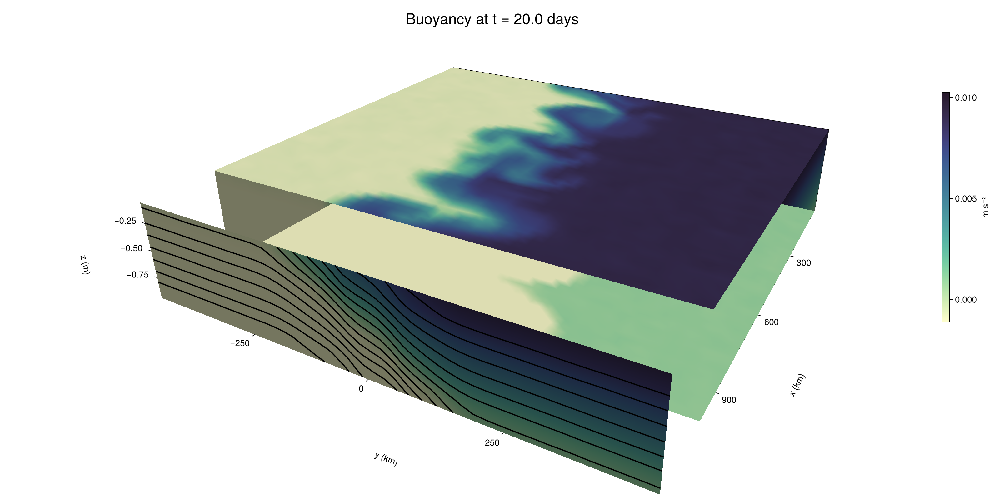

Baroclinic adjustment
In this example, we simulate the evolution and equilibration of a baroclinically unstable front.
Install dependencies
First let's make sure we have all required packages installed.
using Pkg
pkg"add Oceananigans, CairoMakie"using Oceananigans
using Oceananigans.UnitsGrid
We use a three-dimensional channel that is periodic in the x direction:
Lx = 1000kilometers # east-west extent [m]
Ly = 1000kilometers # north-south extent [m]
Lz = 1kilometers # depth [m]
grid = RectilinearGrid(size = (48, 48, 8),
x = (0, Lx),
y = (-Ly/2, Ly/2),
z = (-Lz, 0),
topology = (Periodic, Bounded, Bounded))48×48×8 RectilinearGrid{Float64, Periodic, Bounded, Bounded} on CPU with 3×3×3 halo
├── Periodic x ∈ [0.0, 1.0e6) regularly spaced with Δx=20833.3
├── Bounded y ∈ [-500000.0, 500000.0] regularly spaced with Δy=20833.3
└── Bounded z ∈ [-1000.0, 0.0] regularly spaced with Δz=125.0Model
We built a HydrostaticFreeSurfaceModel with an ImplicitFreeSurface solver. Regarding Coriolis, we use a beta-plane centered at 45° South.
model = HydrostaticFreeSurfaceModel(; grid,
coriolis = BetaPlane(latitude = -45),
buoyancy = BuoyancyTracer(),
tracers = :b,
momentum_advection = WENO(),
tracer_advection = WENO())HydrostaticFreeSurfaceModel{CPU, RectilinearGrid}(time = 0 seconds, iteration = 0)
├── grid: 48×48×8 RectilinearGrid{Float64, Periodic, Bounded, Bounded} on CPU with 3×3×3 halo
├── timestepper: QuasiAdamsBashforth2TimeStepper
├── tracers: b
├── closure: Nothing
├── buoyancy: BuoyancyTracer with ĝ = NegativeZDirection()
├── free surface: ImplicitFreeSurface with gravitational acceleration 9.80665 m s⁻²
│ └── solver: FFTImplicitFreeSurfaceSolver
├── advection scheme:
│ ├── momentum: WENO reconstruction order 5
│ └── b: WENO reconstruction order 5
└── coriolis: BetaPlane{Float64}We start our simulation from rest with a baroclinically unstable buoyancy distribution. We use ramp(y, Δy), defined below, to specify a front with width Δy and horizontal buoyancy gradient M². We impose the front on top of a vertical buoyancy gradient N² and a bit of noise.
"""
ramp(y, Δy)
Linear ramp from 0 to 1 between -Δy/2 and +Δy/2.
For example:
```
y < -Δy/2 => ramp = 0
-Δy/2 < y < -Δy/2 => ramp = y / Δy
y > Δy/2 => ramp = 1
```
"""
ramp(y, Δy) = min(max(0, y/Δy + 1/2), 1)
N² = 1e-5 # [s⁻²] buoyancy frequency / stratification
M² = 1e-7 # [s⁻²] horizontal buoyancy gradient
Δy = 100kilometers # width of the region of the front
Δb = Δy * M² # buoyancy jump associated with the front
ϵb = 1e-2 * Δb # noise amplitude
bᵢ(x, y, z) = N² * z + Δb * ramp(y, Δy) + ϵb * randn()
set!(model, b=bᵢ)Let's visualize the initial buoyancy distribution.
using CairoMakie
# Build coordinates with units of kilometers
x, y, z = 1e-3 .* nodes(grid, (Center(), Center(), Center()))
b = model.tracers.b
fig, ax, hm = heatmap(y, z, interior(b)[1, :, :],
colormap=:deep,
axis = (xlabel = "y [km]",
ylabel = "z [km]",
title = "b(x=0, y, z, t=0)",
titlesize = 24))
Colorbar(fig[1, 2], hm, label = "[m s⁻²]")
fig
Simulation
Now let's build a Simulation.
simulation = Simulation(model, Δt=20minutes, stop_time=20days)Simulation of HydrostaticFreeSurfaceModel{CPU, RectilinearGrid}(time = 0 seconds, iteration = 0)
├── Next time step: 20 minutes
├── Elapsed wall time: 0 seconds
├── Wall time per iteration: NaN days
├── Stop time: 20 days
├── Stop iteration : Inf
├── Wall time limit: Inf
├── Callbacks: OrderedDict with 4 entries:
│ ├── stop_time_exceeded => Callback of stop_time_exceeded on IterationInterval(1)
│ ├── stop_iteration_exceeded => Callback of stop_iteration_exceeded on IterationInterval(1)
│ ├── wall_time_limit_exceeded => Callback of wall_time_limit_exceeded on IterationInterval(1)
│ └── nan_checker => Callback of NaNChecker for u on IterationInterval(100)
├── Output writers: OrderedDict with no entries
└── Diagnostics: OrderedDict with no entriesWe add a TimeStepWizard callback to adapt the simulation's time-step,
conjure_time_step_wizard!(simulation, IterationInterval(20), cfl=0.2, max_Δt=20minutes)Also, we add a callback to print a message about how the simulation is going,
using Printf
wall_clock = Ref(time_ns())
function print_progress(sim)
u, v, w = model.velocities
progress = 100 * (time(sim) / sim.stop_time)
elapsed = (time_ns() - wall_clock[]) / 1e9
@printf("[%05.2f%%] i: %d, t: %s, wall time: %s, max(u): (%6.3e, %6.3e, %6.3e) m/s, next Δt: %s\n",
progress, iteration(sim), prettytime(sim), prettytime(elapsed),
maximum(abs, u), maximum(abs, v), maximum(abs, w), prettytime(sim.Δt))
wall_clock[] = time_ns()
return nothing
end
add_callback!(simulation, print_progress, IterationInterval(100))Diagnostics/Output
Here, we save the buoyancy, $b$, at the edges of our domain as well as the zonal ($x$) average of buoyancy.
u, v, w = model.velocities
ζ = ∂x(v) - ∂y(u)
B = Average(b, dims=1)
U = Average(u, dims=1)
V = Average(v, dims=1)
filename = "baroclinic_adjustment"
save_fields_interval = 0.5day
slicers = (east = (grid.Nx, :, :),
north = (:, grid.Ny, :),
bottom = (:, :, 1),
top = (:, :, grid.Nz))
for side in keys(slicers)
indices = slicers[side]
simulation.output_writers[side] = JLD2OutputWriter(model, (; b, ζ);
filename = filename * "_$(side)_slice",
schedule = TimeInterval(save_fields_interval),
overwrite_existing = true,
indices)
end
simulation.output_writers[:zonal] = JLD2OutputWriter(model, (; b=B, u=U, v=V);
filename = filename * "_zonal_average",
schedule = TimeInterval(save_fields_interval),
overwrite_existing = true)JLD2OutputWriter scheduled on TimeInterval(12 hours):
├── filepath: ./baroclinic_adjustment_zonal_average.jld2
├── 3 outputs: (b, u, v)
├── array type: Array{Float64}
├── including: [:grid, :coriolis, :buoyancy, :closure]
├── file_splitting: NoFileSplitting
└── file size: 29.3 KiBNow we're ready to run.
@info "Running the simulation..."
run!(simulation)
@info "Simulation completed in " * prettytime(simulation.run_wall_time)[ Info: Running the simulation...
[ Info: Initializing simulation...
[00.00%] i: 0, t: 0 seconds, wall time: 14.450 seconds, max(u): (0.000e+00, 0.000e+00, 0.000e+00) m/s, next Δt: 20 minutes
[ Info: ... simulation initialization complete (14.603 seconds)
[ Info: Executing initial time step...
[ Info: ... initial time step complete (19.523 seconds).
[06.94%] i: 100, t: 1.389 days, wall time: 37.156 seconds, max(u): (1.285e-01, 1.233e-01, 1.564e-03) m/s, next Δt: 20 minutes
[13.89%] i: 200, t: 2.778 days, wall time: 4.499 seconds, max(u): (2.071e-01, 1.768e-01, 1.798e-03) m/s, next Δt: 20 minutes
[20.83%] i: 300, t: 4.167 days, wall time: 4.832 seconds, max(u): (2.739e-01, 2.593e-01, 1.758e-03) m/s, next Δt: 20 minutes
[27.78%] i: 400, t: 5.556 days, wall time: 4.555 seconds, max(u): (3.585e-01, 3.430e-01, 1.853e-03) m/s, next Δt: 20 minutes
[34.72%] i: 500, t: 6.944 days, wall time: 4.521 seconds, max(u): (4.940e-01, 4.351e-01, 2.054e-03) m/s, next Δt: 20 minutes
[41.67%] i: 600, t: 8.333 days, wall time: 4.576 seconds, max(u): (6.542e-01, 6.983e-01, 2.324e-03) m/s, next Δt: 20 minutes
[48.61%] i: 700, t: 9.722 days, wall time: 4.600 seconds, max(u): (9.567e-01, 1.083e+00, 3.261e-03) m/s, next Δt: 20 minutes
[55.56%] i: 800, t: 11.111 days, wall time: 4.470 seconds, max(u): (1.232e+00, 1.094e+00, 4.739e-03) m/s, next Δt: 20 minutes
[62.50%] i: 900, t: 12.500 days, wall time: 4.366 seconds, max(u): (1.425e+00, 1.086e+00, 4.841e-03) m/s, next Δt: 20 minutes
[69.44%] i: 1000, t: 13.889 days, wall time: 4.467 seconds, max(u): (1.398e+00, 1.118e+00, 4.432e-03) m/s, next Δt: 20 minutes
[76.39%] i: 1100, t: 15.278 days, wall time: 4.792 seconds, max(u): (1.231e+00, 9.675e-01, 3.315e-03) m/s, next Δt: 20 minutes
[83.33%] i: 1200, t: 16.667 days, wall time: 4.561 seconds, max(u): (1.134e+00, 9.206e-01, 3.157e-03) m/s, next Δt: 20 minutes
[90.28%] i: 1300, t: 18.056 days, wall time: 4.539 seconds, max(u): (1.424e+00, 1.022e+00, 2.891e-03) m/s, next Δt: 20 minutes
[97.22%] i: 1400, t: 19.444 days, wall time: 4.528 seconds, max(u): (1.509e+00, 1.131e+00, 2.299e-03) m/s, next Δt: 20 minutes
[ Info: Simulation is stopping after running for 1.712 minutes.
[ Info: Simulation time 20 days equals or exceeds stop time 20 days.
[ Info: Simulation completed in 1.713 minutes
Visualization
All that's left is to make a pretty movie. Actually, we make two visualizations here. First, we illustrate how to make a 3D visualization with Makie's Axis3 and Makie.surface. Then we make a movie in 2D. We use CairoMakie in this example, but note that using GLMakie is more convenient on a system with OpenGL, as figures will be displayed on the screen.
using CairoMakieThree-dimensional visualization
We load the saved buoyancy output on the top, bottom, north, and east surface as FieldTimeSerieses.
filename = "baroclinic_adjustment"
sides = keys(slicers)
slice_filenames = NamedTuple(side => filename * "_$(side)_slice.jld2" for side in sides)
b_timeserieses = (east = FieldTimeSeries(slice_filenames.east, "b"),
north = FieldTimeSeries(slice_filenames.north, "b"),
bottom = FieldTimeSeries(slice_filenames.bottom, "b"),
top = FieldTimeSeries(slice_filenames.top, "b"))
B_timeseries = FieldTimeSeries(filename * "_zonal_average.jld2", "b")
times = B_timeseries.times
grid = B_timeseries.grid48×48×8 RectilinearGrid{Float64, Periodic, Bounded, Bounded} on CPU with 3×3×3 halo
├── Periodic x ∈ [0.0, 1.0e6) regularly spaced with Δx=20833.3
├── Bounded y ∈ [-500000.0, 500000.0] regularly spaced with Δy=20833.3
└── Bounded z ∈ [-1000.0, 0.0] regularly spaced with Δz=125.0We build the coordinates. We rescale horizontal coordinates to kilometers.
xb, yb, zb = nodes(b_timeserieses.east)
xb = xb ./ 1e3 # convert m -> km
yb = yb ./ 1e3 # convert m -> km
Nx, Ny, Nz = size(grid)
x_xz = repeat(x, 1, Nz)
y_xz_north = y[end] * ones(Nx, Nz)
z_xz = repeat(reshape(z, 1, Nz), Nx, 1)
x_yz_east = x[end] * ones(Ny, Nz)
y_yz = repeat(y, 1, Nz)
z_yz = repeat(reshape(z, 1, Nz), grid.Ny, 1)
x_xy = x
y_xy = y
z_xy_top = z[end] * ones(grid.Nx, grid.Ny)
z_xy_bottom = z[1] * ones(grid.Nx, grid.Ny)Then we create a 3D axis. We use zonal_slice_displacement to control where the plot of the instantaneous zonal average flow is located.
fig = Figure(size = (1600, 800))
zonal_slice_displacement = 1.2
ax = Axis3(fig[2, 1],
aspect=(1, 1, 1/5),
xlabel = "x (km)",
ylabel = "y (km)",
zlabel = "z (m)",
xlabeloffset = 100,
ylabeloffset = 100,
zlabeloffset = 100,
limits = ((x[1], zonal_slice_displacement * x[end]), (y[1], y[end]), (z[1], z[end])),
elevation = 0.45,
azimuth = 6.8,
xspinesvisible = false,
zgridvisible = false,
protrusions = 40,
perspectiveness = 0.7)Axis3()We use data from the final savepoint for the 3D plot. Note that this plot can easily be animated by using Makie's Observable. To dive into Observables, check out Makie.jl's Documentation.
n = length(times)41Now let's make a 3D plot of the buoyancy and in front of it we'll use the zonally-averaged output to plot the instantaneous zonal-average of the buoyancy.
b_slices = (east = interior(b_timeserieses.east[n], 1, :, :),
north = interior(b_timeserieses.north[n], :, 1, :),
bottom = interior(b_timeserieses.bottom[n], :, :, 1),
top = interior(b_timeserieses.top[n], :, :, 1))
# Zonally-averaged buoyancy
B = interior(B_timeseries[n], 1, :, :)
clims = 1.1 .* extrema(b_timeserieses.top[n][:])
kwargs = (colorrange=clims, colormap=:deep)
surface!(ax, x_yz_east, y_yz, z_yz; color = b_slices.east, kwargs...)
surface!(ax, x_xz, y_xz_north, z_xz; color = b_slices.north, kwargs...)
surface!(ax, x_xy, y_xy, z_xy_bottom ; color = b_slices.bottom, kwargs...)
surface!(ax, x_xy, y_xy, z_xy_top; color = b_slices.top, kwargs...)
sf = surface!(ax, zonal_slice_displacement .* x_yz_east, y_yz, z_yz; color = B, kwargs...)
contour!(ax, y, z, B; transformation = (:yz, zonal_slice_displacement * x[end]),
levels = 15, linewidth = 2, color = :black)
Colorbar(fig[2, 2], sf, label = "m s⁻²", height = Relative(0.4), tellheight=false)
title = "Buoyancy at t = " * string(round(times[n] / day, digits=1)) * " days"
fig[1, 1:2] = Label(fig, title; fontsize = 24, tellwidth = false, padding = (0, 0, -120, 0))
rowgap!(fig.layout, 1, Relative(-0.2))
colgap!(fig.layout, 1, Relative(-0.1))
save("baroclinic_adjustment_3d.png", fig)
Two-dimensional movie
We make a 2D movie that shows buoyancy $b$ and vertical vorticity $ζ$ at the surface, as well as the zonally-averaged zonal and meridional velocities $U$ and $V$ in the $(y, z)$ plane. First we load the FieldTimeSeries and extract the additional coordinates we'll need for plotting
ζ_timeseries = FieldTimeSeries(slice_filenames.top, "ζ")
U_timeseries = FieldTimeSeries(filename * "_zonal_average.jld2", "u")
B_timeseries = FieldTimeSeries(filename * "_zonal_average.jld2", "b")
V_timeseries = FieldTimeSeries(filename * "_zonal_average.jld2", "v")
xζ, yζ, zζ = nodes(ζ_timeseries)
yv = ynodes(V_timeseries)
xζ = xζ ./ 1e3 # convert m -> km
yζ = yζ ./ 1e3 # convert m -> km
yv = yv ./ 1e3 # convert m -> km49-element Vector{Float64}:
-500.0
-479.1666666666667
-458.3333333333333
-437.5
-416.6666666666667
-395.8333333333333
-375.0
-354.1666666666667
-333.3333333333333
-312.5
-291.6666666666667
-270.8333333333333
-250.0
-229.16666666666666
-208.33333333333334
-187.5
-166.66666666666666
-145.83333333333334
-125.0
-104.16666666666667
-83.33333333333333
-62.5
-41.666666666666664
-20.833333333333332
0.0
20.833333333333332
41.666666666666664
62.5
83.33333333333333
104.16666666666667
125.0
145.83333333333334
166.66666666666666
187.5
208.33333333333334
229.16666666666666
250.0
270.8333333333333
291.6666666666667
312.5
333.3333333333333
354.1666666666667
375.0
395.8333333333333
416.6666666666667
437.5
458.3333333333333
479.1666666666667
500.0Next, we set up a plot with 4 panels. The top panels are large and square, while the bottom panels get a reduced aspect ratio through rowsize!.
set_theme!(Theme(fontsize=24))
fig = Figure(size=(1800, 1000))
axb = Axis(fig[1, 2], xlabel="x (km)", ylabel="y (km)", aspect=1)
axζ = Axis(fig[1, 3], xlabel="x (km)", ylabel="y (km)", aspect=1, yaxisposition=:right)
axu = Axis(fig[2, 2], xlabel="y (km)", ylabel="z (m)")
axv = Axis(fig[2, 3], xlabel="y (km)", ylabel="z (m)", yaxisposition=:right)
rowsize!(fig.layout, 2, Relative(0.3))To prepare a plot for animation, we index the timeseries with an Observable,
n = Observable(1)
b_top = @lift interior(b_timeserieses.top[$n], :, :, 1)
ζ_top = @lift interior(ζ_timeseries[$n], :, :, 1)
U = @lift interior(U_timeseries[$n], 1, :, :)
V = @lift interior(V_timeseries[$n], 1, :, :)
B = @lift interior(B_timeseries[$n], 1, :, :)Observable([-0.009376245750556579 -0.008140909885723331 -0.006877117043919442 -0.005639454273244714 -0.004378181297453223 -0.003115059419167997 -0.0018777188212579655 -0.0006304637115562597; -0.009373790603490199 -0.008102064538835994 -0.006875832865560288 -0.005619355595442453 -0.004340063495008469 -0.003101877111827534 -0.0018883999475491481 -0.000630282029314209; -0.009363569121279646 -0.008121534500428905 -0.006882020894714718 -0.005620586999541895 -0.004345732720797403 -0.003125650275838783 -0.001891453922696823 -0.0006206373043706489; -0.009397098913163498 -0.008102660041774536 -0.006887057369033799 -0.005620113969226661 -0.004387581756820902 -0.003134300922843218 -0.0018836974702220672 -0.0006189167053277099; -0.00938828576735593 -0.00814039348815905 -0.0068584202237102964 -0.005612906704462674 -0.004371407614104966 -0.0031213588993334977 -0.0018815110801774268 -0.0006237632483019618; -0.009368064510884493 -0.008111838306500972 -0.0068822303789195126 -0.005640782500782259 -0.0043810458507915285 -0.0031280825278326312 -0.0018646964575254356 -0.000593126022647094; -0.009386761493235118 -0.008152349559371512 -0.00686815925586479 -0.0056193950354901726 -0.004347862082968849 -0.0031170392357511415 -0.0018555165069022498 -0.0005824020925667547; -0.009372627716920054 -0.008133757604041407 -0.006902610447796942 -0.005592011020632825 -0.0043677852155726395 -0.003120578583319786 -0.001875014515785166 -0.0006227120232085865; -0.009377043739723047 -0.008124484290212368 -0.006856284365349877 -0.005603438492680733 -0.004365073678185401 -0.0031292871329728802 -0.0018800098101337756 -0.0006224244561971136; -0.009375627898308656 -0.008113716530787879 -0.006878748674125166 -0.0056233183663142805 -0.004366348185900968 -0.0031061981198008686 -0.0018652065833354196 -0.000637617555345847; -0.009374178198121906 -0.008112848926264528 -0.006897636926230725 -0.005624316742807052 -0.0043802136648772175 -0.003112005699576375 -0.0018606246245039555 -0.0006387539060199518; -0.009351597442860595 -0.00810791236853232 -0.0068557501156353 -0.005633151673274575 -0.004381292411589092 -0.00311629671244649 -0.0018685814012359277 -0.00062544394535118; -0.00938470923528234 -0.0081130710194104 -0.006838236439172175 -0.005613414714445546 -0.0043489431265209145 -0.003158198313522034 -0.00188821394675677 -0.0006461689480207862; -0.009374372186435284 -0.008145928156208737 -0.006870406338313553 -0.005609015844291953 -0.00438054110318606 -0.0031116857445400345 -0.00185604224402759 -0.0006403149179895657; -0.009381732698410096 -0.008116785804305034 -0.00688778687328364 -0.005624022776431792 -0.004367499270122018 -0.003139605558578619 -0.0018812148812173723 -0.0006286154588112904; -0.009370358272672026 -0.008106877200620121 -0.0068992347223606676 -0.005628480094010631 -0.004393367612746943 -0.0031085486661068975 -0.0018699387697663084 -0.0006205421634489285; -0.009379888024283514 -0.008131774403457923 -0.006872677589100341 -0.0056120200802779975 -0.00436315576550986 -0.0031261483258409766 -0.0018708963406060828 -0.0006346247637834031; -0.00934983327098988 -0.0081396885409077 -0.006883109227129707 -0.005624410773775626 -0.0043535482098546125 -0.003124157138927455 -0.0018835270751712723 -0.0006165163016349473; -0.009392747274139789 -0.008157780470726213 -0.0068600873949561615 -0.005610123696786175 -0.00436173229065351 -0.003115867314521554 -0.0018594060323164439 -0.0006236520583554982; -0.00938089505927192 -0.008142350108430224 -0.006832777976745645 -0.005633888180728006 -0.004381726233387859 -0.0031313682613528684 -0.0018874641648493784 -0.0006409037638134838; -0.009388860189476208 -0.008110239762897648 -0.006888120598404562 -0.005623877705684253 -0.004347540824565917 -0.003135648915644211 -0.0018711273545356268 -0.0006126130361711161; -0.009357648337277695 -0.008128425292098196 -0.006868157184203434 -0.005622919504690699 -0.0043768072242774065 -0.003111771136219974 -0.001879609436521534 -0.0006135630765498479; -0.007496251579814063 -0.006263994208666593 -0.004997040887218554 -0.0037605339413633652 -0.0024953923083815255 -0.0012446672755555275 -1.5139107937329471e-5 0.001265683147969617; -0.0054042846017106246 -0.004181209539067196 -0.0029133173662530803 -0.0016396062617461172 -0.00039391896655498383 0.0008464094572889356 0.002054516094000754 0.0033443586004893605; -0.0033383249532526575 -0.0021011439032955184 -0.0008490802406548375 0.000409289507506588 0.001650937701040413 0.002904849968464197 0.004184315029330573 0.005416007916208066; -0.0012385639198929032 -7.120759598172165e-6 0.001257338665057141 0.002502956669339074 0.0037479257261812983 0.005012231556138881 0.0062680268267360124 0.0075074575365235196; 0.0006253567352946125 0.0018950329903906946 0.0031312178226992906 0.004360003234722187 0.005609309180304461 0.0068821804779717445 0.00814648843143908 0.00937230644040969; 0.0006110710762656812 0.001876276055444497 0.0031291623057391684 0.0043823994182337995 0.005622879957773413 0.006902417479143015 0.008115152781428535 0.00936845051679414; 0.0006250110575129071 0.001840202917383945 0.0031248021803398085 0.004361160755938854 0.005632252981619784 0.006880957040494286 0.008111299320288043 0.00938596855436683; 0.0006205366631399759 0.0018825212144829174 0.0031410552932048027 0.004351772732093226 0.005640023118230135 0.006865756478240021 0.008118930393212313 0.009376787537537243; 0.0006221593064658575 0.00188242089848189 0.0031435903093822433 0.004394639975444027 0.005625361733995679 0.006880015616494643 0.008136429175485542 0.00934936958723846; 0.0006333332566272385 0.0018693585563086814 0.003108995800547673 0.004385788037817267 0.005644296427835277 0.0068617868019044586 0.008117661884116499 0.009348270182594896; 0.0006169719542737576 0.0018846467453823422 0.0031257069989057314 0.004368540858664453 0.005639458952212913 0.006875755450730797 0.008119568864924214 0.009344473337217754; 0.0005912990823519624 0.001878718476750586 0.003125501850612724 0.004368478945533727 0.0056588852604247545 0.006850015363249952 0.008122101451734942 0.009368893163293854; 0.0006215738315297679 0.0018791499356111275 0.0031339912558764563 0.00437826744507891 0.005634236883379583 0.006869843283815711 0.008138248772594925 0.009384645057572858; 0.0006364036688657038 0.0018773746071938022 0.003118896227444883 0.004381095278427623 0.005602904834496501 0.006874466129128193 0.008133448103185129 0.009374495912280683; 0.0006372515903912773 0.0018659031038485909 0.003132679565396383 0.004353100876910559 0.0056182208821530175 0.006877086749004695 0.008126805085443799 0.009351159564314421; 0.000652019567093804 0.0018639740397140773 0.0031261306385976955 0.004370126024168371 0.005613587113705648 0.006867642468013521 0.008109416024760506 0.00936694393278798; 0.0006161767195519064 0.0018727996090816704 0.0031239870672320137 0.0043576321398182795 0.005629315433286551 0.006908814424572634 0.008118911469020466 0.009379483052083082; 0.0006480439181387468 0.0018950393489546424 0.0031123414745674923 0.004360943025899131 0.005632391583121669 0.006872963045175533 0.00809813696294529 0.009371900713547742; 0.0005979019122365213 0.0018661989415518067 0.003091932067975053 0.004369334351774007 0.005626711791634706 0.0068983080432672254 0.008160408685978443 0.009404223395188815; 0.0006107054081383858 0.0018785814342584535 0.0031270150785629087 0.004378288969295565 0.005624122527192667 0.006894495536920652 0.008113182497626567 0.009389028288038798; 0.0006309402173134997 0.00188379941862544 0.003142381170077923 0.0043764368974513095 0.005632822271745635 0.006882409586582319 0.00816169847237863 0.009414478331576158; 0.0006255056393125335 0.0018701317267389797 0.003130531170960372 0.004389404966395315 0.005638856790806998 0.006840962908196214 0.008092337604449034 0.009380888860309966; 0.0006225077024967111 0.0018461436607377748 0.003134305590673813 0.004386868504199718 0.0056069808547637885 0.006896337891018872 0.008123549304171399 0.009387461974146768; 0.0006283501814687743 0.0018508171550411618 0.0031374374567691397 0.004372184099376652 0.005614127117324747 0.0068832501032365144 0.008127611615122841 0.009426080278351281; 0.0005984265953092823 0.0018798182979600456 0.003104543376033339 0.004346102199728006 0.005635163249406859 0.006889010593712564 0.008120482384530793 0.00939213165059792; 0.000634976775551126 0.001866090352929303 0.003098791366287709 0.004375803307179726 0.005627146516335363 0.006878861104593777 0.0081466127845198 0.009386449476423376])
and then build our plot:
hm = heatmap!(axb, xb, yb, b_top, colorrange=(0, Δb), colormap=:thermal)
Colorbar(fig[1, 1], hm, flipaxis=false, label="Surface b(x, y) (m s⁻²)")
hm = heatmap!(axζ, xζ, yζ, ζ_top, colorrange=(-5e-5, 5e-5), colormap=:balance)
Colorbar(fig[1, 4], hm, label="Surface ζ(x, y) (s⁻¹)")
hm = heatmap!(axu, yb, zb, U; colorrange=(-5e-1, 5e-1), colormap=:balance)
Colorbar(fig[2, 1], hm, flipaxis=false, label="Zonally-averaged U(y, z) (m s⁻¹)")
contour!(axu, yb, zb, B; levels=15, color=:black)
hm = heatmap!(axv, yv, zb, V; colorrange=(-1e-1, 1e-1), colormap=:balance)
Colorbar(fig[2, 4], hm, label="Zonally-averaged V(y, z) (m s⁻¹)")
contour!(axv, yb, zb, B; levels=15, color=:black)Finally, we're ready to record the movie.
frames = 1:length(times)
record(fig, filename * ".mp4", frames, framerate=8) do i
n[] = i
endThis page was generated using Literate.jl.